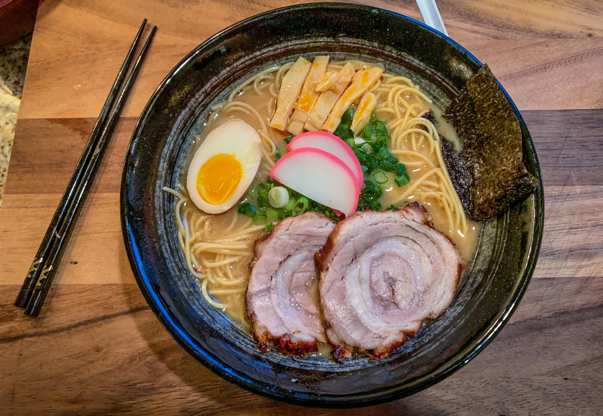

Ichiraku Ramen

Ingredients
- 6 portions of ramen noodles, fresh or instant
- Soy-marinated eggs
- Marinated Bamboo shoots
- Chopped Green Onion
For the soy sauce broth
- 3L of water
- 900g of chicken bones
- 450g boneless pork shoulder or loin
- 3 cloves garlic, peeled
- 1 piece of ginger, sliced
- 3 green onions, roughly chopped
- 250ml soy sauce
- 60ml sake
- 2tbsp mirin
For the chasu sauce
- 160ml water
- 80ml sake
- 80ml soy sauce
- 3tbsp sugar
Instructions
- Rinse the chicken bones in cold water, then place them in a large pot with the water, pork, garlic, ginger, and green onions
- Bring to the boil, removing the dirt that comes to the surface. Lower the heat and simmer with the pot covered for around two hours.
- Remove the pork, then strain off the broth, getting rid of the other ingredients.
- Add the soy sauce, sake, and mirin, then leave to simmer with the pot covered until ready to serve.
- Mix the ingredients for the chashu sauce in a large pan. Add the pork, then bring to the boil over a medium heat.
Cover with a lid, leaving slightly open so the steam can escape, then reduce the heat to low and simmer for around 30 minutes, turning the meat from time to time until just a little bit of liquid is left.
- Remove the lid, stay with the pan, and watch the liquid simmer until bubbles start to appear.
- Turn the pork to cover it completely with the sauce, then remove from the pan and slice thinly.
- When ready to serve, cook the ramen following the instructions on the packaging.
Divide the broth into six bowls, then add the noodles, pork, bamboo shoots, soy-marinated eggs, and green onions.
Return to home page